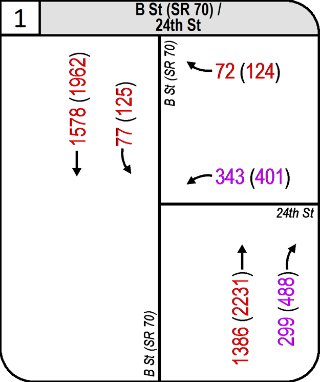
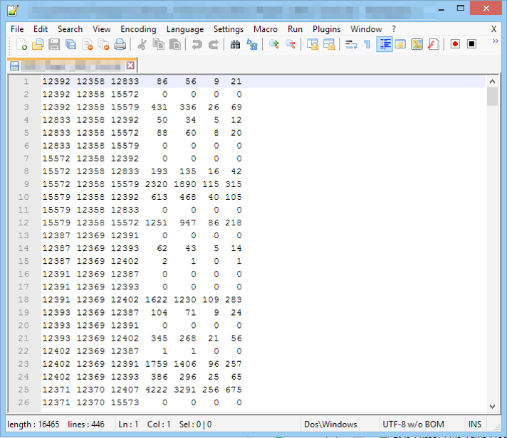
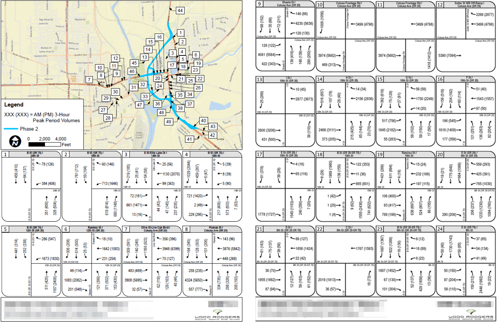
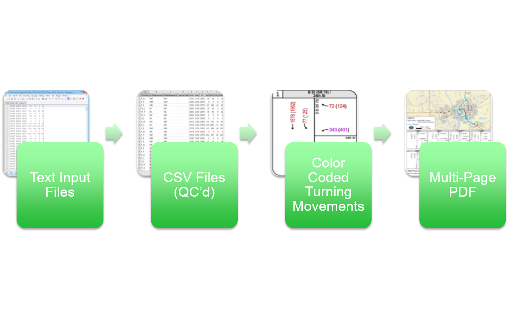

Speeding Up Transportation Planning Woes with GIS

GIS Developer, Wood Rodgers, Inc
Transportation Planner Engineer, Wood Rodgers, Inc
What we'll cover
- Some project background
- The software involved
- Traffic Analysis Zones
- Intersection Turning Movement Figures
- Value Added Deliverables
- Recap
Some project background
Marysville, CA
A small city of ~12,000 people, located about 40 miles north of Sacramento, CA. The city experiences about 60,000 cars passing through its borders on a daily basis due to 4 highways converging at its center.
Alternatives
The client tasked us with presenting existing conditions against the impacts of future growth (with and without proposed roadway changes).The software involved
Transportation Planning Software
- CitiLabs Cube
- PTV VISSIM
GIS Software
- Esri ArcGIS Desktop 10.2.2
- Python 2.7 32-bit
Misc. Software
- Microsoft Excel
Citilabs Cube
PTV VISSIM
Traffic Analysis Zones
By definition...
Traffic analysis zones are constructed by census block information. Typically these blocks are used in transportation models to store socio-economic data, including number of automobiles per household, household income, and employment within the zone. This information is used to estimate trips produced by and attracted to the zone.
Which means...?
Speak GIS to me!
Marysville, CA
Seems easy enough...
Until one realizes that updating one parcel has a ripple effect;
Every parcel within two different buffer distances need to also be updated with the sum of their neighbors
4 days slow
And the window to start the models and have them finish on time was only 2 days away
So, Kyle offered to help...
And it looped through entire dataset, updating EVERY point
A solution appears!
15 updated parcels
| Color | Distance | Quantity |
|---|---|---|
| Yellow | Quarter Mile | 865 |
| Green | Half Mile | 1,280 |
| Purple | 1.05 Mile | 3,229 |
| Compared to running ~690,000 times | ||
Intersection Turning Movement Figures
By definition...
A way of quantifying vehicle movements through an intersection
Which looks a little like...
Intersection Turning Movement Figures
Old way of doing things...
Intersection Turning Movement Figures
The GIS way
Text Input Files |
|
Multi-page PDF |
What actually happens...

Using GIS to estimate direction
Data logic
The turning movement data had some validation checks that needed to be taken into account.
Each lane in each quadrant had up to 9 possible rules to check against.
A few of the 9 rules
| Color | Rule |
|---|---|
| Green | Future value is lower than existing value |
| Orange | Future value is higher than the allowable maximum value |
| Purple | Future value is zero and existing value is greater than zero |
Value-Added Deliverables
VISSIM - Model exported to video
Speed Tables (Formatted via Excel rules)
Speed Contours (Temporal features in ArcGIS Desktop)
Recap
Thanks!
Kyle Morgan (kmorgan@woodrodgers.com)http://gisdev-km.github.io/presentations/EsriUC_2015